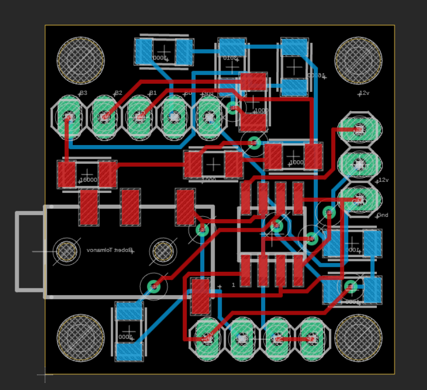
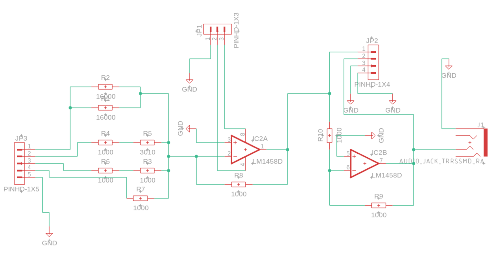

4-bit DAC PCB Design
I designed and fabricated a compact 4-bit Weighted Resistor DAC PCB using LTspice for simulation and EAGLE for layout. The board successfully converted digital signals to analog audio, validated through oscilloscope testing and Arduino integration. This project reinforced my skills in circuit design, PCB assembly, and mixed-signal analysis, while demonstrating a sustainable, low-power hardware solution.


Slot Machine Game System
- Built a complete slot machine game system on a Basys 3 FPGA using SystemVerilog, integrating a custom FSM,
comparator, random generator, LED drivers, and win detection logic.
- Collaborated in a 3-person team to debug and implement modules, including state machines and one-shot timing extensions
for buzzer and LED signaling, verified through behavioral simulations and hardware testing.